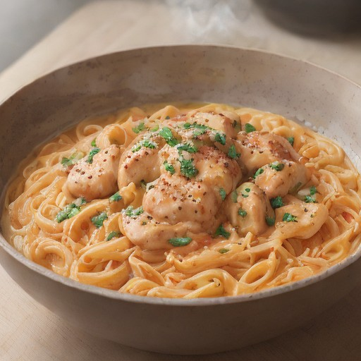

パスタ
とろけるチーズ × タッカルビチキン: 悪魔的スパイシーチーズケーキパスタ！

とろけるチーズとタッカルビチキンの意外な組み合わせ！濃厚なスパイスで、悪魔的ながらも超美味しいチーズケーキパスタ。 ぜひ、一度お試しあれ！
💡 こんな時・こんな人におすすめ！
特別な日や、日常の晩ご飯にもおすすめ！
📋 必要な材料（ポストイット風）
材料リスト 1
- とろけるチーズ適量
- タッカルビチキン適量
- スパイス適量
材料リスト 2
- 小麦粉適量
- 卵適量
- 牛乳適量
🍳 作り方ステップ
1
1. タッカルビチキンの汁を、少しだけ混ぜ合わせ、チーズを混ぜる。
2
2. ボウルに小麦粉と牛乳を混ぜ、卵を加え、粘り気をつけながらよく混ぜる。
3
3. チーズとタッカルビチキンの混合物と、小麦粉と牛乳の混合物を混ぜ合わせる。
4
4. 仕上げに、好きなスパイスを加えて、好みの形に成形する。